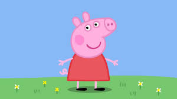
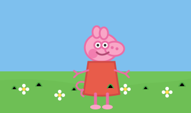
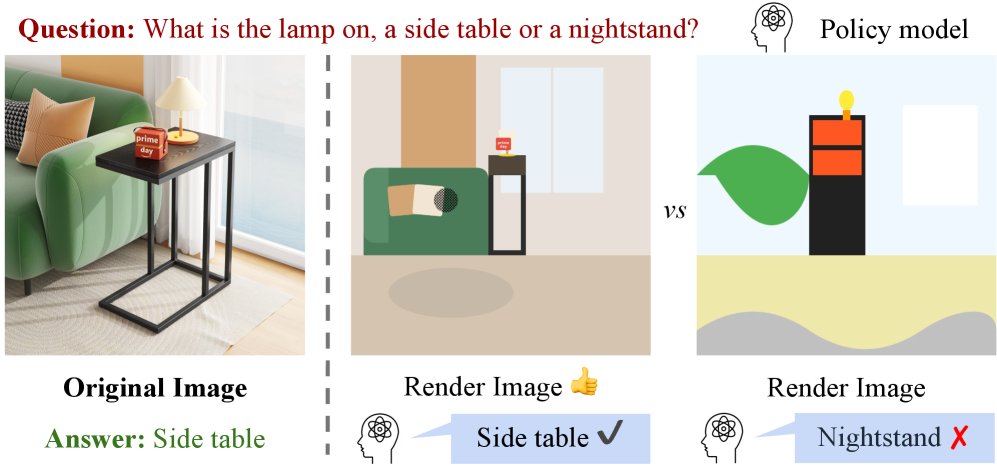
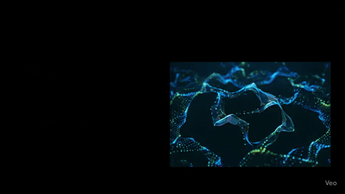
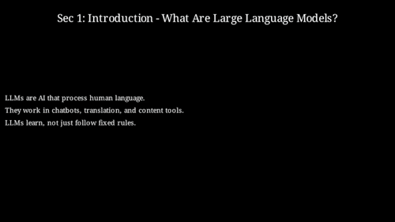
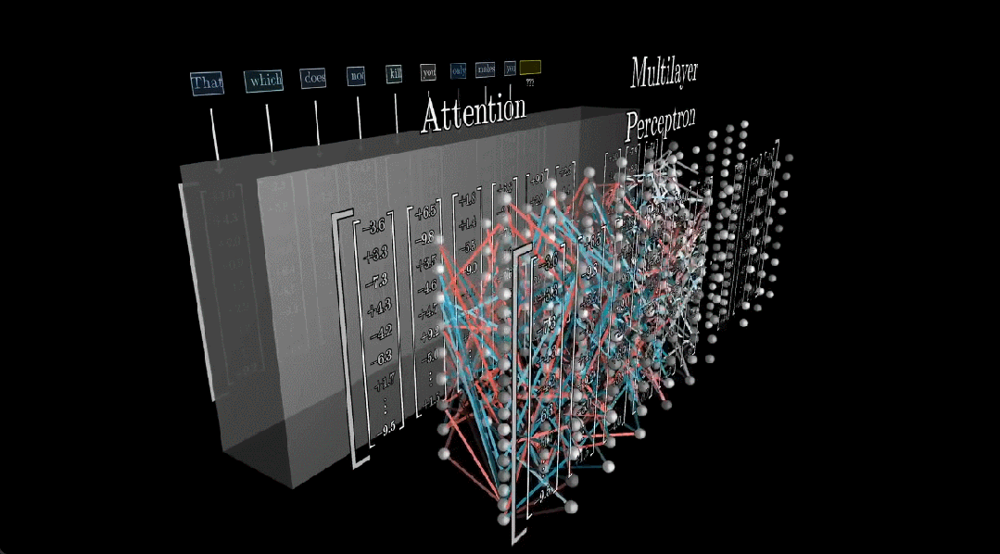
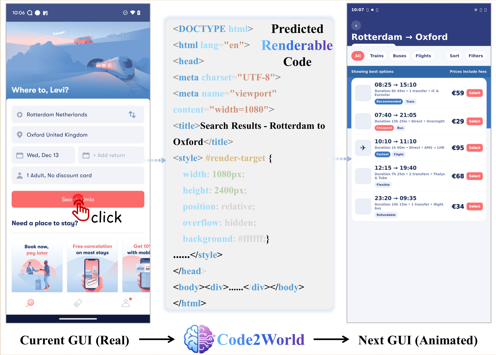

When Vision Meets Code
Unlike natural language — free-form, flexible, and descriptive — code is precise, structured, and executable.
It doesn't just describe what should happen; it makes it happen. And while code is still often
treated as a specialized "language" modality, its role has become central in program synthesis, software
engineering, and tool use — especially in the agent era.
Something interesting is happening at the frontier. The Gemini series uses code generation (e.g., SVG) to push the boundaries of multimodal capability. Kimi K2.5 emphasizes visual agentic intelligence — reconstructing a website from visual demonstrations. Together, these point to a growing intuition: code sits on the bridge between language and vision.
In this blog, I want to share my thoughts and recent works on what happens when vision meets code: how code can reshape images, video, 3D, and world models.

Code as Visual Representation
Most AI systems "see" images the same way a camera does — as a grid of millions of pixels, each storing a precise color value. It works, but it's a lot of data, and it's not really how humans see. When we glance at a scene, we don't mentally log every pixel. We notice structure: where things are, how many there are, what shapes they form.
Think of how an artist starts with a rough sketch before adding color and detail. That sketch — spare, symbolic, structural — is often enough to convey meaning. We propose borrowing this idea for AI: instead of pixels, represent images as Scalable Vector Graphics (SVG) code.
SVG is the format behind every crisp icon, logo, and diagram on the web. Rather than storing colors pixel-by-pixel, it describes shapes: draw a blue rectangle here, a circle there, a curved path connecting them. It's compact, human-readable, and — crucially — executable. This raises a compelling question: can an AI learn to see and reason through code, rather than pixels?
Here's a quick example. Given a photo, can a model reconstruct it as clean SVG code that renders back into something visually meaningful?
| Input Image | SVG Code | Rendered Image |
|---|---|---|
|  A photo of Peppa |
<svg viewBox="0 0 320 190" xmlns="http://www.w3.org/2000/svg">
<rect x="0" y="0" width="320" height="190" fill="#7ec0ee"/>
<rect x="0" y="120" width="320" height="70" fill="#72c45a"/>
<path d="M0 135 Q60 130 120 140 T240 140
Q290 138 320 132 L320 190 0 190 Z"
fill="#6bbc53" opacity="0.6"/>
<!-- Character, flowers, grass -->
...
</svg>
|
 Rendered from code |
This is the core idea behind VCode: if a model truly understands an image, it should be able to reconstruct it as executable SVG code. Not a pixel-perfect copy — a symbolic one. The objects, their positions, their relationships, the text, the visual hierarchy — all expressed as clean, human-readable vector primitives. If you can write code that renders it, you've proven you understood it.
But how do you measure whether the code actually captured what matters? We introduce CodeVQA, a simple but powerful evaluation: convert an image to SVG, render the SVG, then ask a visual question-answering model to answer questions using only the rendered version. If the answers match those from the original image, the SVG successfully preserved the meaning — not just the aesthetics.
Think of it like a compression test: if the rendered code can still answer "How many people are in the image?" or "What does the sign say?", the code has done its job.
Video Generation via Programming
If code can represent a static image, can it represent a dynamic one? Video is just images over time — and time is something code handles naturally through sequences, loops, and state transitions.
The limitations of pixel-based video generation become obvious the moment you need structured content. Ask a diffusion model to generate an educational video explaining the Pythagorean theorem: you'll get beautiful visuals with garbled equations, inconsistent text, and layouts that drift frame to frame. The problem is fundamental — continuous pixel space is poorly suited for discrete, symbolic elements like text, math notation, and diagrams. "Approximately correct" text is just wrong text.
Code2Video reframes video creation as code generation. Instead of predicting pixels, it writes executable Python scripts using the Manim animation library — the same tool behind 3Blue1Brown's math visualizations. Every element is precisely specified: formula layout, animation timing, color transitions. The rendering engine handles the pixels, not a neural network.
| Instruction | Pixel Gen: Veo3 | Code Gen: Claude Opus 4.0 |
|---|---|---|
| Large Language Model |

|

|
Real-world Applications
This idea is already finding its way into real products. Remotion builds programmatic video on React — each frame is a component, each video is a codebase. 3Blue1Brown applies the same pipeline to create stunning math visualizations that have captivated millions. Here's a glimpse of what they produce:
| 3Blue1Brown | Remotion |
|---|---|
|

"How might LLMs store facts" |

"This video was made with code" |
Coder as World Model
Above we used code to describe existing visual content — converting images to SVG, topics to animated videos. But code can do something more powerful: it can simulate environments. We discuss two representative cases.
3D: Blender Code as Engine
A Blender script doesn't just describe a 3D scene — it defines a world with physics, lighting, and interaction rules. VIGA reframes 3D reconstruction as code generation: given a 2D image, produce a Blender Python script that constructs the scene as a fully parametric program — named objects with geometry, materials, lighting, and camera pose. The output isn't a frozen neural rendering; it's an editable scene graph expressed in code.
| Input | Reconstruct the scene | Throw a ball to knock over all the objects |
|---|---|---|

|
|
|
GUI: HTML Code as Engine
Autonomous GUI agents — systems that navigate apps, click buttons, and fill forms on behalf of users — need to predict what happens before they act. Confirm the wrong payment, delete the wrong file, and there's no undo. This predictive capability is a world model: given the current screen and a proposed action, simulate the next screen.
Existing approaches either describe the next state in text (losing visual information) or hallucinate it with diffusion (producing garbled text, collapsed layouts, misaligned buttons). Code2World proposes the obvious-in-retrospect alternative: predict the next GUI state as renderable HTML/CSS, then render it with a browser.
The insight is that GUIs are already defined by code. HTML is the native representation of user interfaces. By framing next-state prediction as HTML generation, Code2World leverages VLMs' enormous web-code pretraining — not as a hack, but as a natural alignment between representation and prior knowledge.
Looking Forward
It means a model can receive both text instructions and visual demonstrations to write code and reproduce effects — bridging language and vision through the shared language of programs.
References
- "VCode: a Multimodal Coding Benchmark with SVG as Symbolic Visual Representation." [Paper]
- "A Vision Check-up for Language Models." [Paper]
- "Code2Video: A Code-centric Paradigm for Educational Video Generation." [Paper]
- "TheoremExplainAgent: Towards Video-based Multimodal Explanations for LLM Theorem Understanding." [Paper]
- "VIGA: Vision-as-Inverse-Graphics Agent via Interleaved Multimodal Reasoning." [Paper]
- "Code2World: A GUI World Model via Renderable Code Generation." [Paper]
- "JanusCoder: Towards a Foundational Visual-Programmatic Interface for Code Intelligence." [Paper]
- Remotion — Make videos programmatically with React. [Website]
- 3Blue1Brown. [Website]